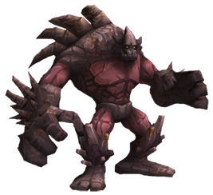
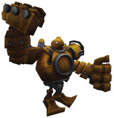

Ultimo Parche!!
Malphite ha sido elegido con cierta frecuencia en las últimas rondas clasificatorias de League of Legends.
En el meta actual, su popularidad es del 5,2%.
Casi nadie lo ve como una amenaza. Solo ha sido sancionado en aproximadamente el 2,1% de las jornadas de Liga.
Blitzcrank se ha utilizado mucho en los ultimos partidos clasificados de League of Legends. En el meta actual, su popularidad es del 6,9%. Muy a menudo esta prohibido durante la seleccion de campeones. Obviamente, la mayoria de los jugadores lo ven como una amenaza real. En partidas clasificatorias recientes, Blitzcrank fue sancionado el 24,2 % de las veces.